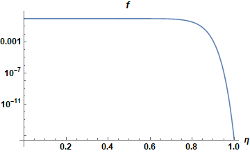

Various advection schemes¶
Motivation¶
The motivation for this study stems from the observation that our 3d turbulence simulations in Feltor seem to
require a significant higher resolution and
seem to generate significantly smaller scales
than finite Difference simulations of the same region like Grillix or Tokam3X. Since our simulations operate at the limit of our available HPC resources simply increasing the resolution further is not an option. This results in the situation where Feltor cannot simulate the same regions of the tokamak that other frameworks seem to be able to.
Currently, there are two hypotheses
the gyro-fluid model in use physically produces smaller scales than the drift-fluid models
the required high resolution is a fundamental problem of the discontinuous Galerkin discretization
In this report we want to test the second hypothesis in more detail. In order to do this we consider a simple test scenario as a testbed for a variety of dG and FD discretization and filter techniques.
A simple test scenario¶
We consider the 2d incompressible Euler equations
with vorticity \(\omega\) and stream-function \(\phi\). The Euler equations have an infinite amount of conserved quantities among them the total vorticity \(V\), the kinetic energy \(E\) and the enstrophy \(\Omega\)
Often, these invariants are taken as a measure of quality of the integrator. We define a relative error in these quantities as
The double shear layer problem¶
We initialize a double shear layer and pose boundary conditions: periodic in x, Dirichlet in y
We will then integrate the solution from \(t=0\) to \(t=10\) using various methods. The expected result is
The solution quickly rolls up and generates small fine vorticity lines that are more and more difficult to resolve by the numerical scheme. In the following we test various schemes to solve this equation and
intentionally under-resolve the simulation with ~140 points in each direction (in the sense that most schemes will fail)
keep the total number of points constant when changing the order of the method. This in particular means that for dG schemes we half the number of cells when we double the number of polynomial coefficients
A naive approach¶
The first approach to discretize is to simply use centered differences (or the dG analogue) for the flux
It is well known that the forward in time, centered in space method for solving hyperbolic systems is unconditionally unstable [LeVeque]. Reference [Liu2000] reports that the centered flux does not have any numerical diffusion while the upwind flux does. They also prove that upwind and centered fluxes do not dissipate energy.
We run all simulations on a GeForce GTX 1660-Ti
We observe that
both the FD and the dG scheme of order 5 produce a lot of oscillations
even though the number of spatial points is the same (~140) the dG scheme has to use a 5 times smaller time step
Arakawa¶
The Arakawa scheme was generalized for dG methods in [Einkemmer2014] and is a method that conserves vorticity, energy and enstrophy exactly. Just as for the centered differences it is well-known that the scheme produces oscillations without a diffusive term.
The Arakawa scheme without regularization is indeed always unstable (also for projection method described later)
Note that the higher order simulation takes 5-6 times longer to complete
Upwind scheme¶
The idea of an upwind scheme is to use either a forward or a backward discretization of the flux \(f=\omega v\) depending on the sign of the velocity
The upwind scheme of first order introduces a lot of numerical diffusion,
the higher order dG schemes with pointwise multiplication seem to be unstable at stagnation points
Correct multiplication of dG polynomials¶
In the computation of the flux \(n v\) the approach that we used above (termed pointwise) was to simply compute the pointwise multiplication of the nodal discretization [NodalDG]. However, the correct approach when multiplying two dG discretized functions is to interpolate both onto a higher degree polynomial (of degree \(2n\)) and then projecting the result back unto the lower degree polynomial \(n\)). We call this the projection method [NodalDG].
Only the upwind scheme with correct multiplication and projection of polynomials seems to work reliably without regularization. Only small oscillations are visible.
The higher order scheme displays smaller scales than the 3rd order scheme
All orders dissipate energy and enstrophy (10%!) but the higher order scheme dissipates less (but has more oscillations)
Upwind advection¶
As a last result we use the upwind dG scheme on the advection equation, which is possible with \(\nabla \cdot \vec v = 0\):
instead of the conservation equation:

the upwind advection scheme with pointwise multiplication looks almost exactly the same as the conservative upwind scheme with projection method
we do not show the plots for the upwind-advection method with projection multiplication since the plots and numbers are almost identical (only the energy and vorticity conservation differ slightly)
Modal filtering¶
In [NodalDG] an alternative to the projection method was suggested to stabilize dG methods. The modal filter can be thought of as a de-aliasing technique for dG methods and is thought to be an alternative to artificial diffusion techniques. The technique consists in applying the filter \(f(\eta)\) to each mode \(\eta\) after every timestep
We experiment with the exponential filter shown in the next graph

First, let us try to apply the filter to the upwind scheme with pointwise multiplication (as was originally suggested)
The modal Filter introduces numerical diffusion but seems to have (slight) troubles at the stagnation points
also true for the projection method
in a way the modal filter is a projection filter (projecting out high frequencies) and should thus be equivalent to a projection method of lower order and the same number of cells
Modal filter on the Arakawa scheme¶

The modal filter with \(\eta_c=0.5\), \(s=8\) and \(\alpha=36\) improves the oscillations in the Arakawa scheme but does not entirely remove them
The modal filter with \(\eta_c=0.0\), \(s=8\) and \(\alpha=36\) further dampens the oscillations but overdampens the vortex structure while still having trouble at the symmetry points
This situation is the same for the projection and the centered methods
The modal filter is unable to make the unstable techniques stable and is somewhat similar to a projection method of lower order -> maybe look more into equivalence of projection and modal filtering? Especially for order 3 this seems evident
Viscosity and hyperviscosity¶
In order to make the centered and Arakawa discretization stable, it is common to add artificial viscosity terms to the equations
where \(s=1,2,...\) is the order. This technique clearly destroys the exact energy and enstrophy conservation of the original system. Since Fourier modes are Eigenfunctions of the Laplace operator the artificial viscosity can be seen as a low pass filters of order \(s\) for spectral schemes. In contrast to a modal dG filter however, the spectral filter applies to the entire box as a whole and not just to individual cells. We now want to show that
the schemes that produce less oscillations also need less viscosity
in particular the order 1 arakawa scheme needs less viscosity than higher order dG schemes (because higher order polynomials produce more oscillations)
We will now use a semi-implicit Multistep scheme known as “IMEX-BDF-3-3” scheme in the numerical community and commonly referred to as “Karniadakis” in the plasma physics community. This allows to solve the diffusion as an implicit contribution and the advection explicitly.
Order 1 artificial Viscosity¶
(in order to compare the various plots it is recommended to open the book twice in two different browser windows)
for same \(\nu\) the higher order scheme is more dissipative than the lower order scheme
Order 2 artificial viscosity¶
Again, the higher order dG scheme dissipatess slightly more than the FD scheme for the same \(\nu\) parameter
the \(n=3\) hyperviscous with \(\nu = 5\cdot 10^{-4}\) looks almost exactly like the upwind discretization with projection method (open 2 browser windows side by side to see this) apart from a “wiggle” in the upwind method. It also has almost identical conservation properties
Conclusions¶
The higher amount of dissipation is likely the result of the larger amount of oscillations the higher order dG scheme produces.
This shows that the upwind methods incorporates numerical diffusion naturally in the scheme. What the artificial diffusion does is to add numerical dissipation to a scheme (Arakawa) that does not inherently possess one. The upwind scheme however does not need to tune free parameters (\(s\) and \(\nu\)) to work properly. Furthermore, it does not need to invert the implicit part of the timestepper and is therefore potentially faster than the artificial viscosity regularization.
Timesteppers¶
As a last step we vary the timesteppers that we use to compute the solution
FilteredExplicitMultistep SSP-6-3
Shu-Osher SSPRK-3-3
FilteredExplicitMultistep eBDF-3-3
FilteredExplicitMultistep TVB-3-3
it seems that for fixed timestep the various methods do not have an influence on the quality of the solution
however the TVB-3-3 and SSP-6-3 methods execute 25% faster than eBDF-3-3, The Shu-Osher scheme was not run at its maximum timestep and therefore needs more function evaluations per step